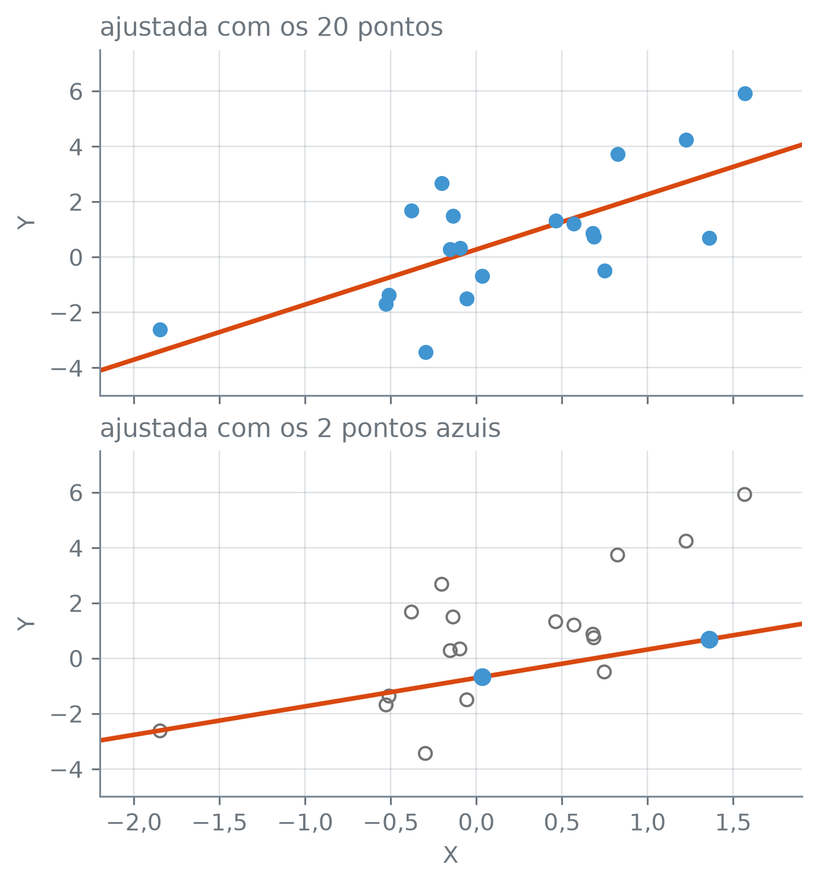

Esta seção corresponde à seção 6.4 de James et al. (2023).
Para prever a pressão arterial de um paciente, a idade, o sexo e o índice de massa corporal são três preditores, e um hospital pode ter essas medidas de milhares de pacientes. Um exame genético mede muito mais: meio milhão de marcadores no DNA de cada pessoa, num estudo que talvez tenha 200 pacientes. Aí há mais colunas que observações. O que acontece com os mínimos quadrados quando o número de preditores \(p\) passa do número de observações \(n\), ou chega perto dele? E o que a regularização ainda consegue fazer nesse caso?
Mais colunas que observações
No exame genético, \(p\) passa de \(n\). Outro caso comum são os termos de busca: cada termo que alguém digitou num buscador vira uma coluna, com 1 se a pessoa o usou e 0 se não, e as colunas chegam a dezenas de milhares com os dados de poucos milhares de usuários.
Um conjunto de dados é de alta dimensão quando tem mais preditores que observações, \(p > n\); a dimensão, aqui, é o número de preditores \(p\). Quando \(n\) é bem maior que \(p\), o conjunto é de baixa dimensão. Os efeitos medidos a seguir já aparecem quando \(p\) chega perto de \(n\).
Mínimos quadrados com muitas colunas
Dois pontos, uma reta
Com um preditor, a regressão por mínimos quadrados estima dois coeficientes, o intercepto e a inclinação. Com 20 pontos, a reta passa entre eles. Com dois pontos de \(x\) diferentes, sempre existe uma reta que passa exatamente pelos dois, e o RSS dela é zero: aí \(p = 1\) e \(n = 2\), e há \(p + 1 = n\) coeficientes para \(n\) pontos. Na célula, os 20 pontos vêm de \(f(x) = 1 + 2x\) mais um ruído de desvio padrão 2, e a segunda reta é ajustada só com os dois primeiros. Antes de rodar a célula: qual das duas retas você espera que erre menos em pontos novos?
rng = np.random.default_rng(11)x = rng.normal(size=(20, 1)) # 20 valores de X# f(x) = 1 + 2x, com ruído de desvio padrão 2y =1+2* x[:, 0] + rng.normal(0, 2, 20)x_novo = rng.normal(size=(10_000, 1)) # pontos novos, para o testey_novo =1+2* x_novo[:, 0] + rng.normal(0, 2, 10_000)reta20 = LinearRegression().fit(x, y)reta2 = LinearRegression().fit(x[:2], y[:2]) # só os dois primeiros pontosrss2 = ((y[:2] - reta2.predict(x[:2])) **2).sum()print("RSS da reta de 2 pontos")print(" abaixo de 10⁻⁶:", bool(rss2 <1e-6))for nome, reta in [("20 pontos", reta20), ("2 pontos", reta2)]: mse = ((y_novo - reta.predict(x_novo)) **2).mean()print(f"MSE de teste, {nome}:", numero_br(mse))
RSS da reta de 2 pontos
abaixo de 10⁻⁶: True
MSE de teste, 20 pontos: 4,45
MSE de teste, 2 pontos: 7,86
fig, (ax20, ax2) = plt.subplots(2, 1, figsize=(4.8, 5.2), sharex=True, sharey=True, layout="constrained")grade_x = np.array([[-2.2], [1.9]])ax20.scatter(x[:, 0], y, s=30, color="C0", zorder=3)ax20.plot(grade_x[:, 0], reta20.predict(grade_x), color="C1", linewidth=2)ax2.scatter(x[2:, 0], y[2:], s=30, facecolors="none", edgecolors="0.45")ax2.scatter(x[:2, 0], y[:2], s=45, color="C0", zorder=3)ax2.plot(grade_x[:, 0], reta2.predict(grade_x), color="C1", linewidth=2)ax20.set_title("ajustada com os 20 pontos", loc="left")ax2.set_title("ajustada com os 2 pontos azuis", loc="left")for ax in (ax20, ax2): ax.set_ylabel("Y") ax.xaxis.set_major_formatter(virgula(1)) ax.yaxis.set_major_formatter(virgula(0))ax2.set_xlim(-2.2, 1.9)ax2.set_xlabel("X")plt.show()

Figura 1: Mínimos quadrados com um preditor. Em cima, a reta laranja ajustada com os 20 pontos azuis. Embaixo, a reta ajustada só com os dois pontos azuis, que passa exatamente pelos dois; os círculos vazados cinza são os outros 18 pontos, que não entraram nesse ajuste. Os dois painéis têm os mesmos eixos.
ax.scatter(x, y, facecolors="none", edgecolors=cor): pontos vazados, só com o contorno na cor dada.
O RSS da reta de dois pontos fica abaixo de um milionésimo: ela passa pelos dois. Em 10.000 pontos novos, o MSE de teste dela é 7,86, contra 4,45 da reta ajustada com os 20; o piso é a variância do ruído, \(2^2 = 4\). Com dois pontos, a reta não tem como separar a \(f\) do ruído, e segue o ruído dos dois pontos que recebeu. Com outros dois pontos, a reta seria outra.
Colunas de ruído puro
Com \(p\) preditores, os mínimos quadrados estimam \(p + 1\) coeficientes, os \(p\) das colunas e o intercepto. Quando \(p + 1 \ge n\), há coeficientes bastantes para o ajuste passar por todos os \(n\) pontos, como a reta passou pelos dois.
Para ver o que isso faz sem uma \(f\) no meio, a resposta agora é ruído puro. O desenho:
\(n = 20\) valores de \(y\) sorteados da normal padrão, e 20 colunas sorteadas do mesmo jeito, sem relação nenhuma com \(y\);
o modelo com \(p\) colunas usa as \(p\) primeiras, de \(p = 1\) a \(p = 20\);
o teste usa 10.000 pontos novos, sorteados da mesma forma;
como \(y\) não depende de nenhuma coluna, o melhor modelo prevê a média de \(y\), zero, e o erro de teste dele é a variância do ruído, 1: é o piso.
Antes de rodar a célula: o que você espera do \(R^2\) de treino com \(p = 20\)?
rng = np.random.default_rng(11)n =20X_ruido = rng.normal(size=(n, 20)) # 20 colunas de ruídoy_ruido = rng.normal(size=n) # a resposta também é ruídoX_ruido_teste = rng.normal(size=(10_000, 20))y_ruido_teste = rng.normal(size=10_000)linhas = {}with warnings.catch_warnings(record=True) as avisos: warnings.simplefilter("always")for p inrange(1, 21): modelo = LinearRegression().fit(X_ruido[:, :p], y_ruido) previsto = modelo.predict(X_ruido[:, :p]) previsto_teste = modelo.predict(X_ruido_teste[:, :p]) linhas[p] = {"R² de treino": modelo.score(X_ruido[:, :p], y_ruido),"MSE de treino": ((y_ruido - previsto) **2).mean(),"MSE de teste": ((y_ruido_teste - previsto_teste) **2).mean(), }ruido = pd.DataFrame(linhas).Truido.index.name ="p"teste = ruido["MSE de teste"]print("avisos nos 20 ajustes:", len(avisos))print("R² = 1 com p = 19 e 20:",bool(np.allclose(ruido.loc[19:, "R² de treino"], 1)))print("MSE de treino abaixo de 10⁻⁶")print(" com p = 19 e 20:",bool((ruido.loc[19:, "MSE de treino"] <1e-6).all()))print("teste, p = 20 acima de p = 1:", bool(teste[20] > teste[1]))print("teste só sobe com p:", bool((teste.diff().dropna() >0).all()))print("maior MSE de teste em p =", teste.idxmax())ruido.loc[[1, 5, 10, 15, 17, 18, 19, 20]].style.set_uuid("ruido-puro").format(lambda v: numero_br(v, 4))
avisos nos 20 ajustes: 0
R² = 1 com p = 19 e 20: True
MSE de treino abaixo de 10⁻⁶
com p = 19 e 20: True
teste, p = 20 acima de p = 1: True
teste só sobe com p: False
maior MSE de teste em p = 18
R² de treino
MSE de treino
MSE de teste
p
1
0,0113
0,5351
1,0099
5
0,2273
0,4182
1,1696
10
0,4853
0,2786
1,5019
15
0,8320
0,0909
3,2382
17
0,8584
0,0766
5,5301
18
0,9997
0,0001
6,4075
19
1,0000
0,0000
6,3946
20
1,0000
0,0000
5,8985
warnings.catch_warnings(record=True): dentro do bloco with, guarda numa lista, aqui avisos, os avisos que o código emitir, em vez de mostrá-los. warnings.simplefilter("always") faz todo aviso entrar na lista, mesmo repetido.
ruido.loc[19:, coluna]: as linhas de rótulo 19 em diante; com .loc, o rótulo final da fatia entra.
A tabela mostra oito dos 20 valores de \(p\); a figura mostra todos.
Figura 2: Regressão por mínimos quadrados com \(n = 20\) observações e \(p\) colunas de ruído, de 1 a 20, sem relação nenhuma com a resposta. De cima para baixo, o \(R^2\) de treino, o MSE de treino e o MSE de teste, medido em 10.000 pontos novos. A linha vertical pontilhada marca \(p = 19\): dali em diante, \(p + 1 \ge n\); nesta amostra, o \(R^2\) de treino já é 0,9997 em \(p = 18\). No painel de baixo, a linha horizontal tracejada é o piso, a variância do ruído, 1.
O LinearRegression não reclama: os 20 ajustes terminam sem nenhum aviso, inclusive com \(p = 20\), quando há 21 coeficientes para 20 observações. Nesse caso, infinitas combinações de coeficientes passam por todos os pontos, e o ajuste devolve uma delas.
O \(R^2\) de treino sobe de 0,0113, com \(p = 1\), até 1, com \(p = 19\) e \(p = 20\), e o MSE de treino cai de 0,5351 até ficar abaixo de um milionésimo. São 20 colunas de ruído, e quem olhasse só o treino concluiria que elas explicam \(y\) por inteiro. O MSE de teste diz o contrário: 1,0099 com \(p = 1\), perto do piso de 1, e 5,8985 com \(p = 20\), cerca de 5,8 vezes mais (5,8985 ÷ 1,0099).
O teste não sobe a cada coluna, como mostra o False de “teste só sobe com p”: o maior valor está em \(p = 18\), 6,4075, e com \(p = 20\) o erro é um pouco menor. A tabela vem de uma amostra só de 20 linhas, e o valor exato de cada \(p\) depende dela. A próxima célula mede o motivo da subida: quanto os coeficientes mudam de uma amostra para outra.
Coeficientes que mudam com a amostra
Por que o teste piora? Cada coluna nova é mais um coeficiente estimado com os mesmos 20 pontos. Para medir o quanto uma estimativa muda de uma amostra para outra, a célula sorteia 200 amostras novas de treino, cada uma com 20 linhas e 19 colunas de ruído, e ajusta em cada uma os modelos de \(p = 1\) a \(p = 19\). O que se acompanha é \(\hat\beta_1\), o coeficiente da primeira coluna, que está em todos os modelos e cujo valor verdadeiro é zero. A medida de quanto ele varia é a distância entre o primeiro e o terceiro quartil dos 200 valores: a faixa que guarda a metade central deles.
rng = np.random.default_rng(12)registros = []for amostra inrange(200): # 200 amostras novas de treino X_rep = rng.normal(size=(n, 19)) y_rep = rng.normal(size=n) coeficientes = {}for p inrange(1, 20): modelo = LinearRegression().fit(X_rep[:, :p], y_rep) coeficientes[p] = modelo.coef_[0] # β̂₁ registros.append(coeficientes)beta1 = pd.DataFrame(registros) # uma linha por amostra, uma coluna por pentre_quartis = beta1.quantile(0.75) - beta1.quantile(0.25)print("distância entre os quartis de β̂₁:")for p in [1, 10, 17, 18, 19]:print(f" p = {p:>2}: {numero_br(entre_quartis[p], 3)}")print("maior |β̂₁| nas 200 amostras:")for p in [1, 19]:print(f" p = {p:>2}: {numero_br(beta1[p].abs().max(), 1)}")print("|β̂₁| acima de 5, p = 19:", int((beta1[19].abs() >5).sum()))
distância entre os quartis de β̂₁:
p = 1: 0,305
p = 10: 0,474
p = 17: 0,978
p = 18: 1,334
p = 19: 2,397
maior |β̂₁| nas 200 amostras:
p = 1: 0,8
p = 19: 64,1
|β̂₁| acima de 5, p = 19: 26
df.quantile(q): para cada coluna de df, o valor abaixo do qual fica a fração q dos dados; q = 0.25 dá o primeiro quartil, e q = 0.75, o terceiro.
A distância entre os quartis de \(\hat\beta_1\) vai de 0,305 com \(p = 1\) a 0,978 com \(p = 17\) e 2,397 com \(p = 19\), quando \(p + 1 = n\): perto de oito vezes a de \(p = 1\) nesta simulação (2,397 ÷ 0,305). Fora da metade central, há amostras em que o valor dispara: o maior \(|\hat\beta_1|\) das 200 é 0,8 com \(p = 1\) e 64,1 com \(p = 19\). A distância entre quartis olha só a metade central, e esses valores extremos não a puxam.
Figura 3: O coeficiente \(\hat\beta_1\) da primeira coluna de ruído nas 200 amostras de treino, com \(n = 20\). Em cima, o modelo com \(p = 1\); embaixo, com \(p = 19\). As linhas verticais laranja marcam o primeiro e o terceiro quartil; entre elas fica a metade central dos 200 valores. O valor verdadeiro é zero. Os valores de \(|\hat\beta_1|\) acima de 5, que só aparecem com \(p = 19\), ficam fora do gráfico.
ax.hist(valores, bins=faixas): o histograma de valores, com uma barra para cada intervalo entre dois limites consecutivos de faixas; a altura é quantos valores caem nele. Valores fora do primeiro e do último limite ficam de fora.
Na figura, o coeficiente verdadeiro é zero nos dois painéis; o que cresce com \(p\) é o quanto a estimativa depende da amostra. Com \(p = 19\), 26 das 200 amostras dão \(|\hat\beta_1|\) acima de 5 e nem cabem no gráfico. Coeficientes que mudam tanto dão previsões que mudam também: é a variância, um dos dois lados da troca entre viés e variância da seção 7.6, e aqui ela não traz nenhuma redução de viés em troca, porque nenhuma coluna tem relação com \(y\).
O \(C_p\), o BIC e o \(R^2\) ajustado
O erro de treino não serve para comparar modelos com números diferentes de colunas. Os critérios da seção 11.2 corrigem isso: servem também quando \(p\) chega perto de \(n\)? Os três se apoiam numa estimativa da variância do ruído feita com o próprio treino:
\[
\hat\sigma^2 = \frac{\mathrm{RSS}_p}{n - p - 1},
\]
em que \(\mathrm{RSS}_p\) é o RSS do modelo com todas as \(p\) colunas. O \(C_p\) e o BIC de um modelo com \(d\) colunas somam ao RSS dele uma penalidade proporcional a \(\hat\sigma^2\). O \(R^2\) ajustado é
e no modelo com todas as colunas, \(d = p\), o numerador da fração é o próprio \(\hat\sigma^2\). Com \(n = 20\) e \(p = 19\), o denominador \(n - p - 1\) é zero. Com \(p = 18\), é 1, e \(\hat\sigma^2\) é o próprio RSS.
A célula sorteia 200 conjuntos de ruído puro, cada um com \(n = 20\) linhas e 18 colunas. Cada valor de \(p\) usa as \(p\) primeiras colunas de cada amostra: com \(p = 1\), só a primeira; com \(p = 18\), todas. Em cada caso, a célula ajusta o modelo com as \(p\) colunas e calcula \(\hat\sigma^2\) e o \(R^2\) ajustado. A variância verdadeira do ruído é 1, e nenhuma coluna tem relação com \(y\). A tabela dá a mediana dos 200 valores e os quantis de 10% e 90%, que cercam os 80% centrais. E de 18 colunas de ruído, que \(R^2\) ajustado você espera?
rng = np.random.default_rng(13)registros = []for amostra inrange(200): # 200 amostras de ruído puro, n = 20 X_rep = rng.normal(size=(n, 18)) y_rep = rng.normal(size=n) tss = ((y_rep - y_rep.mean()) **2).sum()for p in [1, 18]: # o modelo com todas as p colunas modelo = LinearRegression().fit(X_rep[:, :p], y_rep) rss = ((y_rep - modelo.predict(X_rep[:, :p])) **2).sum() sigma2 = rss / (n - p -1) registros.append({"p": p, "σ̂²": sigma2,"R² ajustado": 1- sigma2 / (tss / (n -1))})criterios = pd.DataFrame(registros)linhas_q = []for p in [1, 18]: grupo = criterios[criterios["p"] == p]for nome, q in [("10%", 0.1), ("mediana", 0.5), ("90%", 0.9)]: linhas_q.append({"p": p, "quantil": nome,"σ̂²": grupo["σ̂²"].quantile(q),"R² ajustado": grupo["R² ajustado"].quantile(q)})print("n − p − 1 com p = 19:", n -19-1)pd.DataFrame(linhas_q).set_index(["p", "quantil"]).style.set_uuid("criterios").format(lambda v: numero_br(v, 3))
n − p − 1 com p = 19: 0
σ̂²
R² ajustado
p
quantil
1
10%
0,624
−0,055
mediana
0,971
−0,037
90%
1,400
0,065
18
10%
0,028
−2,238
mediana
0,467
0,430
90%
3,101
0,976
Com \(p = 1\), os dois critérios fazem o que se espera: \(\hat\sigma^2\) fica em torno da variância verdadeira, 1, e o \(R^2\) ajustado em torno de zero, como deve ser para uma coluna de ruído.
Com \(p = 18\), a mediana do \(R^2\) ajustado é 0,430: em metade das amostras, 18 colunas de ruído passam de 0,430 no critério que devia descontar o número de colunas. Em um décimo delas, passam de 0,976.
A causa está em \(\hat\sigma^2\), que erra para os dois lados: os 80% centrais vão de 0,028 a 3,101. A distribuição é assimétrica, e mais da metade das amostras fica abaixo de 1, com mediana 0,467. Pela fórmula, sempre que \(\hat\sigma^2\) sai abaixo da variância amostral de \(y\), \(\mathrm{TSS}/(n - 1)\), o \(R^2\) ajustado sai positivo. Com \(p\) perto de \(n\), a estimativa em que os critérios se apoiam muda tanto de uma amostra para outra que a correção deixa de valer, e com \(p = 19\) nem se calcula. O que avalia o modelo, então, é o erro em observações que não entraram no ajuste, num conjunto de teste ou na validação cruzada.
Regularizar com \(p\) grande
A seleção passo a passo para frente, a ridge, o lasso e a PCR ajustam modelos menos flexíveis que os mínimos quadrados, e é isso que os torna úteis quando \(p\) é grande. Até quantas colunas de ruído eles ainda ajudam? A célula mede só o lasso, como representante da família; a seleção, a ridge e a PCR não são testadas aqui. Ele aparece lado a lado com os mínimos quadrados e com o modelo nulo, que prevê a média de \(y\) do treino. O desenho:
\(n = 100\) observações de treino e 1.000 de teste;
as 20 primeiras colunas têm coeficiente 1, e as outras, zero; o ruído tem desvio padrão 1, e o piso do erro de teste é 1;
\(p\) vale 20, 50 ou 2.000: 0, 30 ou 1.980 colunas de ruído, sempre com os mesmos 20 sinais;
para cada \(p\), 50 amostras de treino, e em cada uma o lasso com \(\lambda = 2\), 20 e 60 (com alpha\(= \lambda/(2n)\), a conversão da seção 11.4).
Os três valores de \(\lambda\) dão lassos cada vez mais rígidos; a tabela mostra quantos coeficientes cada um deixa diferentes de zero em cada \(p\). Aqui, o melhor deles é apontado pelo erro de teste, só para comparar; num problema real, \(\lambda\) se escolhe por validação cruzada, como na seção 11.5.
Com \(p = 2.000\), a célula leva mais tempo que as outras. Pense antes de ver a saída: com 1.980 colunas de ruído, você espera que um \(\lambda\) maior ajude ou atrapalhe?
A célula seguinte resume as 50 amostras de cada caso pela mediana.
medianas = lasso_p.groupby(["p", "λ"]).median()mse_lasso = medianas["MSE de teste"].unstack() # uma linha por p, uma coluna por λmedianas_ref = referencias.groupby("p").median()print("mediana do MSE de teste, sem lasso:")for p in medianas_ref.index:print(f" p = {numero_br(p, 0)}:")print(f" nulo {numero_br(medianas_ref.loc[p, 'nulo'])}") mq_p = medianas_ref.loc[p, "mínimos quadrados"]print(f" mínimos quadrados {numero_br(mq_p)}")print("λ de menor mediana, por p:")for p in mse_lasso.index:print(f" p = {numero_br(p, 0)}: λ = {mse_lasso.loc[p].idxmin()}")lasso_2000, ref_2000 = mse_lasso.loc[2000], medianas_ref.loc[2000]print("p = 2.000, mínimos quadrados passam")print(" pelos pontos de treino nas 50 amostras:", all(interpola))print("p = 2.000, lasso com os três λ:")print(" abaixo dos mínimos quadrados:",bool((lasso_2000 < ref_2000["mínimos quadrados"]).all()))print(" abaixo do nulo:", bool((lasso_2000 < ref_2000["nulo"]).all()))print(" menor mediana acima de 10:", bool(lasso_2000.min() >10))medianas.rename(index=lambda v: numero_br(v, 0)).style.set_uuid("lasso-p").format({"MSE de teste": numero_br, "não nulos": contagem,"sinais não nulos": contagem})
mediana do MSE de teste, sem lasso:
p = 20:
nulo 21,04
mínimos quadrados 1,26
p = 50:
nulo 21,48
mínimos quadrados 2,04
p = 2.000:
nulo 20,84
mínimos quadrados 20,07
λ de menor mediana, por p:
p = 20: λ = 2
p = 50: λ = 20
p = 2.000: λ = 60
p = 2.000, mínimos quadrados passam
pelos pontos de treino nas 50 amostras: True
p = 2.000, lasso com os três λ:
abaixo dos mínimos quadrados: True
abaixo do nulo: True
menor mediana acima de 10: True
MSE de teste
não nulos
sinais não nulos
p
λ
20
2
1,25
20
20
20
1,66
20
20
60
4,69
20
20
50
2
1,83
46
20
20
1,78
29
20
60
5,34
22
20
2.000
2
18,05
98
13
20
17,29
88
13
60
16,88
67,5
12
np.count_nonzero(arr): quantos elementos de arr são diferentes de zero.
serie.unstack(): numa série com índice de dois níveis, passa o segundo nível para as colunas; aqui, uma linha por \(p\) e uma coluna por \(\lambda\).
df.rename(index=funcao): troca cada rótulo do índice pelo que funcao devolve para ele; aqui, só para exibir 2000 como 2.000.
Figura 4: O lasso e os mínimos quadrados com \(n = 100\) observações, 20 sinais e \(p\) igual a 20, 50 e 2.000 colunas, de cima para baixo. Cada caixa azul resume o MSE de teste nas 50 amostras de treino com um valor de \(\lambda\), e o número embaixo dela é a mediana do número de coeficientes não nulos; a caixa cinza, à direita, é a dos mínimos quadrados. O traço laranja dentro de cada caixa é a mediana. A linha tracejada cinza, rotulada no painel de cima, é o piso, a variância do ruído, 1. As escalas verticais dos três painéis são diferentes.
ax.boxplot(caixas, tick_labels, patch_artist=True): um diagrama de caixa para cada série de caixas, com o rótulo de tick_labels embaixo. A caixa vai do primeiro ao terceiro quartil, o traço dentro dela é a mediana, as hastes vão até o valor mais afastado que ainda fica a menos de 1,5 vez a altura da caixa, e os pontos além delas aparecem soltos. patch_artist=True deixa pintar o interior das caixas com boxprops; o dicionário que a função devolve guarda as caixas em "boxes", e .set(facecolor=cor) repinta uma delas.
Com \(p = 20\), sem colunas de ruído, a menor mediana do MSE de teste do lasso é a do menor \(\lambda\): 1,25, a 0,25 do piso, contra 1,66 com \(\lambda = 20\) e 4,69 com \(\lambda = 60\). Os mínimos quadrados, com 1,26, ficam praticamente empatados com \(\lambda = 2\). Com 100 observações para 20 coeficientes, os mínimos quadrados já variam pouco de uma amostra para outra, e o encolhimento tem pouca variância a cortar.
Com \(p = 50\), a menor mediana é a de \(\lambda = 20\), 1,78, abaixo dos 2,04 dos mínimos quadrados e um pouco abaixo dos 1,83 de \(\lambda = 2\), com 29 coeficientes não nulos em vez de 46; com os dois valores de \(\lambda\), a mediana de sinais não nulos é 20. Com \(\lambda = 60\), o erro sobe para 5,34: o \(\lambda\) certo depende de quantas colunas de ruído há.
Com \(p = 2.000\), há 20 vezes mais colunas que observações. Os mínimos quadrados passam por todos os pontos de treino nas 50 amostras, e o LinearRegression devolve uma das infinitas soluções. A mediana do erro de teste dos mínimos quadrados é 20,07, perto dos 20,84 do modelo nulo.
As medianas do lasso ficam abaixo das duas com os três valores de \(\lambda\), e a menor é a de \(\lambda = 60\), 16,88. O ganho sobre o modelo nulo, porém, é pequeno, 16,88 contra 20,84, e a menor mediana fica acima de 10, longe do piso de 1. Na mediana, o lasso fica com 13, 13 e 12 dos 20 sinais, com \(\lambda = 2\), 20 e 60.
A maldição da dimensionalidade (curse of dimensionality): acrescentar colunas não melhora o modelo por si só. Colunas com relação real com a resposta podem baixar o erro de teste; colunas de ruído dão ao ajuste mais chances de encontrar, por acaso, uma associação que só existe no treino, e fazem o erro de teste subir.
Cuidado ao interpretar
Com \(p \ge n\), uma coluna qualquer pode ser escrita exatamente como uma combinação linear das outras e do intercepto: é a colinearidade da seção 8.6 levada ao extremo. A célula confere isso nos dados de ruído puro, com 20 linhas e 20 colunas.
outras, ultima = X_ruido[:, :19], X_ruido[:, 19]r2_ultima = LinearRegression().fit(outras, ultima).score(outras, ultima)print("coluna 20 a partir das outras 19")print(" R² = 1:", bool(np.isclose(r2_ultima, 1)))
coluna 20 a partir das outras 19
R² = 1: True
A 20.ª coluna de ruído é reproduzida sem erro pelas outras 19 e pelo intercepto; no VIF da seção 8.6, esse \(R^2\) igual a 1 dá uma divisão por zero. Quando uma coluna qualquer é combinação das outras, os dados não dizem quais colunas de fato importam: o crédito de uma pode ir para qualquer combinação que a reproduza.
O lasso escolhe algumas colunas e zera as outras. A célula seguinte o ajusta com \(p = 2.000\) e \(\lambda = 60\), como acima, em duas amostras de treino novas, e compara as colunas de ruído que ele deixa diferentes de zero em cada uma. Se a escolha refletisse algo nos dados, quantas colunas de ruído você esperaria ver em comum nas duas listas?
colunas de ruído escolhidas
(p = 2.000, λ = 60):
1.ª amostra: 58
2.ª amostra: 59
nas duas: 3
np.flatnonzero(arr): as posições dos elementos de arr diferentes de zero.
Com \(p = 2.000\), o lasso ficou com 58 colunas de ruído na primeira amostra e 59 na segunda, e só 3 delas estão nas duas listas. Se as duas listas fossem sorteadas ao acaso entre as 1.980 colunas de ruído, a interseção esperada seria de 58 × 59 ÷ 1.980, cerca de 1,7 coluna: as 3 em comum estão perto do que o puro acaso daria. Um modelo escolhido em alta dimensão é um entre muitos possíveis, e outra amostra de treino escolhe outras colunas. Ele pode ser útil para prever, mas não prova que as colunas dele são as que importam.
O que muda, então
Com \(p + 1 \ge n\), os mínimos quadrados passam por todos os pontos de treino e erram muito fora deles; já perto disso, o erro de teste sobe. A regularização ainda ajuda, mas o erro dela também sobe com as colunas de ruído: com 1.980 delas, o lasso ficou longe do piso de 1.
James, Gareth, Daniela Witten, Trevor Hastie, Robert Tibshirani, e Jonathan Taylor. 2023. An Introduction to Statistical Learning with Applications in Python. Springer.
![Três painéis empilhados com o número de colunas de ruído, de 1 a 20, no eixo horizontal comum, e uma linha vertical pontilhada em 19. No de cima, o R² de treino sobe de 0,0113 em p igual a 1 até praticamente 1 a partir de p igual a 18. No do meio, o MSE de treino desce de 0,5351 em p igual a 1 até praticamente zero a partir de p igual a 18. No de baixo, com uma linha horizontal tracejada em 1, rotulada piso igual a 1, o MSE de teste começa em 1,0099, perto dessa linha, sobe até 6,4075 em p igual a 18 e termina em 5,8985 em p igual a 20.](07-o-que-muda-em-alta-dimensao_files/figure-html/fig-ruido-puro-output-1.png)

![Três painéis empilhados, um para cada p, cada um com três caixas azuis, de lambda igual a 2, 20 e 60, uma caixa cinza dos mínimos quadrados à direita e uma linha horizontal tracejada em 1, rotulada piso igual a 1 no painel de cima. Com p igual a 20, as medianas do lasso são 1,25, 1,66 e 4,69, todas com 20 coeficientes não nulos, e a dos mínimos quadrados é 1,26. Com p igual a 50, as medianas do lasso são 1,83, 1,78 e 5,34, com 46, 29 e 22 não nulos, e a dos mínimos quadrados é 2,04. Com p igual a 2.000, todas as caixas ficam muito acima da linha do piso: as três do lasso são altas, com medianas de cerca de 18, 17,29 e 16,88 e com 98, 88 e 67,5 não nulos, e a dos mínimos quadrados é curta, com mediana de 20,07.](07-o-que-muda-em-alta-dimensao_files/figure-html/fig-lasso-p-cresce-output-1.png)